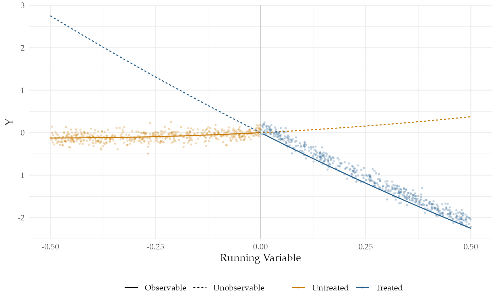

Regression Discontinuity
Source:../vignettes/regression_discontinuity.Rmd
regression_discontinuity.RmdRegression discontinuity designs exploit substantive knowledge that treatment is assigned in a particular way: everyone above a threshold is assigned to treatment and everyone below it is not. Even though researchers do not control the assignment, substantive knowledge about the threshold serves as a basis for a strong identification claim.
Thistlewhite and Campbell introduced the regression discontinuity design in the 1960s to study the impact of scholarships on academic success. Their insight was that students with a test score just above a scholarship cutoff were plausibly comparable to students whose scores were just below the cutoff, so any differences in future academic success could be attributed to the scholarship itself.
Regression discontinuity designs identify a local average treatment effect: the average effect of treatment exactly at the cutoff. The main trouble with the design is that there is vanishingly little data exactly at the cutoff, so any answer strategy needs to use data that is some distance away from the cutoff. The further away from the cutoff we move, the larger the threat of bias.
We’ll consider an application of the regression discontinuity design that examines party incumbency advantage – the effect of a party winning an election on its vote margin in the next election.
Design Declaration
-
Model:
Regression discontinuity designs have four components: A running variable, a cutoff, a treatment variable, and an outcome. The cutoff determines which units are treated depending on the value of the running variable.
In our example, the running variable \(X\) is the Democratic party’s margin of victory at time \(t-1\); and the treatment, \(Z\), is whether the Democratic party won the election in time \(t-1\). The outcome, \(Y\), is the Democratic vote margin at time \(t\). We’ll consider a population of 1,000 of these pairs of elections.
A major assumption required for regression discontinuity is that the conditional expectation functions for both treatment and control potential outcomes are continuous at the cutoff.1 To satisfy this assumption, we specify two smooth conditional expectation functions, one for each potential outcome. The figure plots \(Y\) (the Democratic vote margin at time \(t\)) against \(X\) (the margin at time \(t-1\)). We’ve also plotted the true conditional expectation functions for the treated and control potential outcomes. The solid lines correspond to the observed data and the dashed lines correspond to the unobserved data.

-
Inquiry:
Our estimand is the effect of a Democratic win in an election on the Democratic vote margin of the next election, when the Democratic vote margin of the first election is zero. Formally, it is the difference in the conditional expectation functions of the control and treatment potential outcomes when the running variable is exactly zero. The black vertical line in the plot shows this difference.
-
Data strategy:
We collect data on the Democratic vote share at time \(t-1\) and time \(t\) for all 1,000 pairs of elections. There is no sampling or random assignment.
-
Answer strategy:
We will approximate the treated and untreated conditional expectation functions to the left and right of the cutoff using a flexible regression specification estimated via OLS. In particular, we fit each regression using a fourth-order polynomial. Much of the literature on regression discontinuity designs focuses on the tradeoffs among answer strategies, with many analysts recommending against higher-order polynomial regression specifications. We use one here to highlight how well such an answer strategy does when it matches the functional form in the model. We discuss alternative estimators in the exercises.
N <- 1000
tau <- 0.15
outcome_sd <- 0.1
cutoff <- 0.5
bandwidth <- 0.5
control_coefs <- c(0.5, 0.5)
treatment_coefs <- c(-5, 1)
poly_reg_order <- 4
po_function <- function(X, coefs, tau) {
as.vector(poly(X, length(coefs), raw = T) %*% coefs) +
tau
}
population <- declare_population(N = N, X = runif(N, 0, 1) -
cutoff, noise = rnorm(N, 0, outcome_sd), Z = 1 * (X >
0))
potential_outcomes <- declare_potential_outcomes(Y_Z_0 = po_function(X,
tau = 0, coefs = control_coefs) + noise, Y_Z_1 = po_function(X,
tau = tau, coefs = treatment_coefs) + noise)
reveal_Y <- declare_reveal(Y)
estimand <- declare_inquiry(LATE = po_function(X = 0, coefs = treatment_coefs,
tau = tau) - po_function(X = 0, coefs = control_coefs,
tau = 0))
sampling <- declare_sampling(handler = function(data) {
subset(data, (X > 0 - abs(bandwidth)) & X < 0 + abs(bandwidth))
})
estimator <- declare_estimator(formula = Y ~ poly(X, poly_reg_order) *
Z, model = lm_robust, term = "Z", inquiry = estimand)
regression_discontinuity_design <- population + potential_outcomes +
estimand + reveal_Y + sampling + estimatorTakeaways
We now diagnose the design:
diagnosis <- diagnose_design(regression_discontinuity_design, sims = 25)## Warning: We recommend you choose a higher number of simulations than 25 for the
## top level of simulation.| Estimator Label | Term | N Sims | Bias | RMSE | Power | Coverage | Mean Estimate | SD Estimate | Mean Se | Type S Rate | Mean Inquiry |
|---|---|---|---|---|---|---|---|---|---|---|---|
| estimator | Z | 25 | -0.33 | 0.82 | 0.04 | 0.96 | -0.18 | 0.77 | 0.89 | 1.00 | 0.15 |
| (0.15) | (0.12) | (0.04) | (0.04) | (0.15) | (0.10) | (0.01) | NA | (0.00) |
The power of this design is very low: with 1,000 units we do not achieve even 10% statistical power. However, our estimates of the uncertainty are not too wide: the coverage probability indicates that our confidence intervals indeed contain the estimand 95% of the time as they should. Our answer strategy is highly uncertain because the second-order polynomial specification in regression model gives weights to the data that greatly increase the variance of the estimator (Gelman and Imbens, 2017).
The design is biased because polynomial approximations of the average effect at exactly the point of the threshold will be inaccurate in small samples (Sekhon and Titiunik, 2017), especially as units farther away from the cutoff are incorporated into the answer strategy.
Finally, from the figure, we can see how poorly the average effect at the threshold approximates the average effect for all units. The average treatment effect among the treated (to the right of the threshold in the figure) is negative, whereas at the threshold it is zero This clarifies that the estimand of the regression discontinuity design, the difference at the cutoff, is only relevant for a small – and possibly empty – set of units very close to the cutoff.
An alternative motivation for some designs that do not rely on continuity at the cutoff is “local randomization”.↩︎